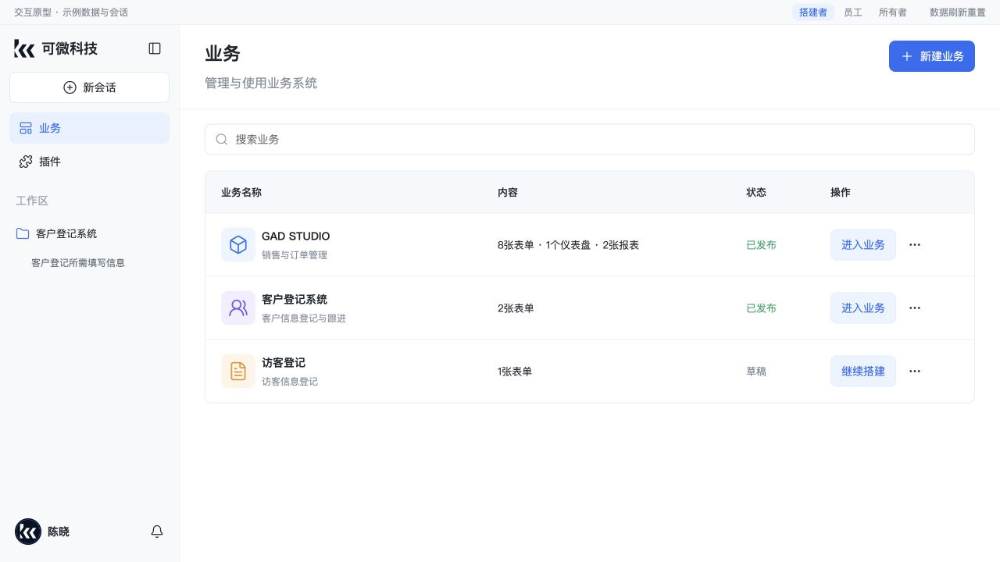

检查日期：2026-10-08。结论：主布局方向已经接入，产品体验只部分对齐。当前浏览器登录身份为 builder。本次只浏览、切换页面和展开面板，没有提交记录、发布系统或修改权限。
| 步骤 | 检查内容 | 健康状态 |
|---|---|---|
| 1 | 全局侧栏与业务首页 | 结构对齐，业务管理与视觉细节仍有差异 |
| 2 | 业务页面目录与记录区 | 布局部分对齐，多页面管理未接入；当前身份读取受限 |
| 3 | 业务区 AI 协助 | 可打开和收起，但缺少原型的当前表单与选中记录上下文呈现 |
| 4 | Workspace 会话及右侧业务资源入口 | 会话主体保留，当前工作区没有匹配到表单与记录快捷入口 |
两侧均有公司、新会话、业务、插件、工作区及个人/通知入口；业务首页均有搜索与列表，这是已对齐的部分。7506 在业务行提供管理菜单、重命名、删除和草稿继续搭建。7500 当前 builder 列表只有已发布系统的“进入业务”；本次打开了原型管理菜单，未执行修改。源代码 BusinessPage 的首页遍历已发布系统，每项显示固定单表单说明。原型示例 GAD 与访客记录的数量不能直接视为7500缺失业务数据。
可见样式差异：7500 左栏约280px，7506约230px；主按钮和导航选中态从原型蓝色变为黑色/灰色，圆角更圆；7500 已发布状态在当前表格宽度下折行。

都采用页面目录与主记录区，AI默认关闭，新增记录/搜索/筛选入口存在。7506 可新建业务页面、管理页面，并组织多张表单、仪表盘、报表和分组。7500 此处只渲染当前业务的一个表单入口；不应把原型多页面能力标为正式交付。
7500 当前 builder 身份打开客户表，表单与记录读请求均显示 KVVI_NOT_ALLOWED。选择客户登记系统工作区后错误仍存在。接入记录明确说明 builder 未授予客户数据读取权限，所以这是当前身份的验证边界，不能据此判定授权实现错误。员工编辑、只读员工、所有者的真实记录流程本次未重新验证。
7506 右侧使用 DSH 标签栏，展示“当前表单”、业务/表单来源和选中记录提问提示，输入位于底部。7500 开启AI后显示通用会话欢迎页、“描述你想要构建的内容”输入与模型/工作区控件；没有呈现当前表单上下文卡片。源代码 BusinessSession 的 assistant 分支没有将 address/navigate 传入 BusinessAssistant，后者渲染通用 conversation.content。这里只确认可见上下文与入口未对齐，没有发送消息，也没有验证模型是否能从其他后台机制获取业务上下文。
7506 保留会话主区，并提供“填写表单 / 表单列表”，单右栏用标签切换业务资源。7500 当前客户登记系统工作区里的“搭建系统能力询问”会话保持对话主体，但顶部仅有“业务”；点击后打开全局业务首页，右栏仍为“开始”。
代码 BusinessHeader 通过工作区文件夹名匹配系统 name/schemaCode。当前文件夹名“客户登记系统”与业务列表“customer”不一致，未命中匹配时走全局业务入口。这解释了本次可见缺口；应使用明确的工作区与业务绑定关系核对快捷入口，而不能把组件存在当作当前入口已可用。
所有图片为本次实际浏览截图，最终对照图均为1280×720。原型仅用于交互与视觉参考，其示例权限/数据/AI不是正式后台证据。本次未验证写入、刷新草稿、发布、数据跨入口一致性或完整角色矩阵。可见的低对比辅助文字及禁用操作需要进一步测量；本次没有做键盘、屏幕阅读器或WCAG合规测试。